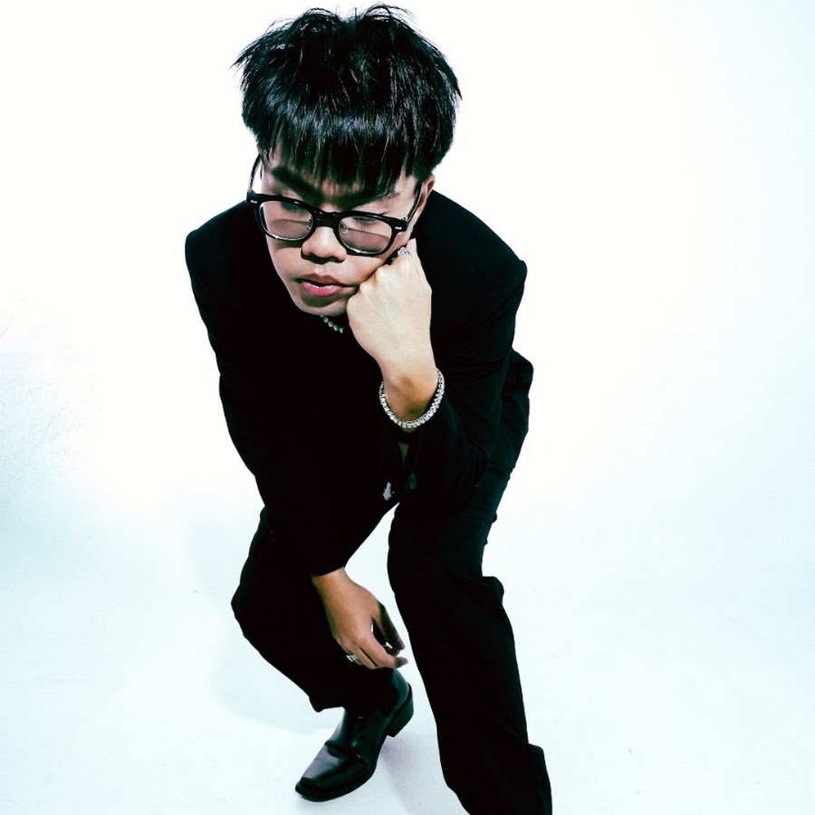

SURE เป็นแร็ปเปอร์ไทย สมาชิกแก๊ง DIEOUT และยังเป็นมือ Mix & Mastering รวมถึง producer ของผลงานหลายชิ้นในกลุ่ม เขาเป็นหนึ่งในศิลปินฮิปฮอปรุ่นใหม่ที่กำลังมาแรงในวงการเพลงไทย ด้วยน้ำเสียงที่มีเสน่ห์และสไตล์การแร็ปที่เป็นเอกลักษณ์ ทำให้ผลงานของเขาเข้าถึงผู้ฟังได้ง่าย ทั้งแฟนฮิปฮอปและสายเพลงร่วมสมัย นอกจากนี้ เขายังเคยเข้าร่วมแข่งขันในรายการ Another World ซึ่งช่วยตอกย้ำศักยภาพและตัวตนในฐานะศิลปินของเขา ผลงานยอดนิยมอย่าง “ดาวนำทาง” สะท้อนความสามารถรอบด้านของเขา ทั้งการร้อง การแร็ป การแต่งเพลง และการมิกซ์มาสเตอร์ ทำให้ SURE เป็นศิลปินที่น่าจับตามองในวงการฮิปฮอปไทย
